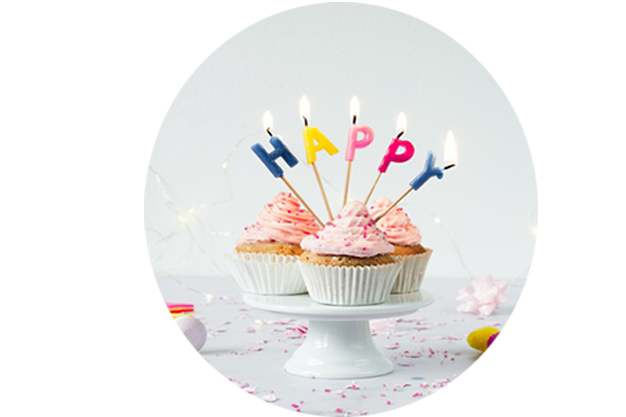
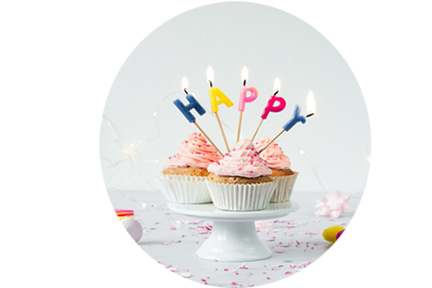

עד גיל 10
 

סיפור כיסוי
שלום זוממי וזוממות יקרים
עכשיו צריך להשאיר הכל בסוד מהמופתע שלנו עד ליום המסיבה.
אתם לא יודעים לשמור סודות בבטן? שקרנים גרועים? או המופתע שלכם אדם חשדן במיוחד..
אל דאגה, עם המדריך שלנו סיפור כיסוי המופתע העתידי לא יצליח לעלות על המזימה המתכוננת שנרקמה לו מתחת לאף..
בדף הבא תלמדו איך להסתיר את ההפתעה , מהו התירוץ הכי מתאים להשתמש בו כדי להביא את המופתע למסיבה
ומה לעשות עם המופתע ביום הגדול,שנתחיל?
טיפים בארגון המזימה:
כיבוי שריפות -
אם הילדים שלכם חשדנים במיוחד ואתם מפחדים שיגלו את המסיבה,
תכננו יחד איתם "מסיבת יום הולדת" בסמוך ליום הגדול.
הידיעה שאתם גלויים בתכנון ליום הולדת שלהם תסיר את הספק כי אתם זוממים מסיבת הפתעה.
קבוצת וואטסאפ-
ילדים צעירים בדרך כלל אוהבים לשחק בטלפון של אחד ההורים,
ומטבעם מעט חטטנים במיוחד בגילאים אלו.
לכן פתחו קבוצת ווטסאפ למסיבה עם כל ההורים של הילדים המוזמנים
ומומלץ להעניק לקבוצה שם שלא ימשוך את תשומת לב ילדכם.
אספנו עבורכם שמות מומלצים:
- שם של מקום העבודה שלכם
- קבוצת ספורט שבה אתם פעילים
- קבוצת ועד כיתה
- קבוצת חגיגת יום הולדת לבן משפחה מרוחק
- ביקור בגן החיות - הסחת דעת מעולה לפני ההפתעה הגדולה
- הליכה לפארק
- ביקור בג'ימבורי
- ביקור אצל סבא וסבתא/בני משפחה
- וודאו עם איש הקשר שלכם שאכן רב המוזמנים הגיעו לפני הגעתכם למסיבה.
- בלי פדיחות- תדאגו שאף בלון לא ברח ממקום המסיבה ויכול להסגיר את המזימה שלכם.
- מסיבת גן חיות.
- מסיבת גיבורי על.
- מסיבת מעבדה.
- מסיבת נסיכות.
- מסיבת בנות ים.
- קוד לבוש:
פיג'מת וונזי חיות - מיקום:
אפשר לחגוג במקום סגור ושעות המומלצות לחגיגה הן אחרי הצהריים המוקדמות. -
קישוטים ואווירה כללית:
כיאה למסיבה המרחשת בג'ונגל נשתמש בעיקר בצבעים כמו ירוק כחול וכתום.
בתחום הציוד הנלווה החל מפרטים לעריכת שולחן ועד מיתוג אביזרי מסיבה (כובעי מסיבה,מדבקות ועוגות) בסגנון חיות ואווירת הג'ונגל. -
אוכל:
האוכל המוגש יהיה בהשראת האוכל של חיות וצבעי הג'ונגל השונים.
הנה רשימת מוצרים המיוצרים בדמות חיות שניתן לקנות :
שניצל דינוזאורים, חטיף דובונים, עוגיות ביסקוויטים 'גן חיות' וסוכריות גומי בצורת חיות.
בנוסף ניתן להכין בעצמכם בהשראת הג'ונגל ירקות צבעוניים חתוכים , עוגה בצורת חיה, כריכים ופירות חתוכים. - חמישה שירים מומלצים
- פעילות:
השכרת מתנפחי פעילות ג'ונגל , קמע תלבושת של חיות ג'ונגל ,פעילות מדריך חיות לילדים, פינת ליטוף. - קוד לבוש:
תחפושות ואביזרים של גיבורי על - מיקום:
ניתן לחגוג במרחב פתוח ושעות המומלצות לחגיגה הן אחרי הצהריים המוקדמות. - ציוד:
רשימת השמעה וציוד הגברה. -
קישוטים ואווירה כללית:
נשתמש בעיקר בצבעי כחול, אדום וצהוב, המזכירים אלמנטים של קומיקס, אפשר לשלב הדפסים מעולם הקומיקס הקשור לגיבור העל שבחרתם.מסיבת גיבורי על כוללת בתוכה תחום רחב של אביזרים כמו מסכות, גלימות,חרבות ומגנים. כשמגיעים לעיצוב שולחן נשתמש במיתוג אביזרי מסיבה (כובעי מסיבה,מדבקות ועוגות) בסגנון גיבור/האהובים על הילד/ה. -
אוכל:
בהשראת צבעי הנושא נסדר סוכריות עדשים בצבעי כחול/אדום/צהוב בקערות הגשה. קאפקייק מעוצב לסמל הגיבור/ה שנבחר/ה, ירקות חתוכים צבעוניים, שיפודי פירות, שקיות פופקורן בצבעי הנושא. - חמישה שירים מומלצים
-
פעילות:
סלסלה ובה בלונים שחורים"פצצות" שבתוכם ממתקים על הילדים "לפוצץ את הפצצה" ולקבל את הממתק. הכנת מסכות גיבורי על אישיות, באמצעות דפי סול צבעוניים, נצנצים דב, טושים ומדבקות כל ילד יכול לעצב מסכה לבד.
מתי להגיד לכולם להגיע?
ביקשו ההורים של הילדים להגיע לפחות חצי שעה לפני הגעתו הצפויה
הכי חשוב-
לא לדבר על המסיבה!
אמנם נשמע מובן מאליו אבל פליטות פה הן הגורם מספר אחת להריסת מסיבות הפתעה.
יום המסיבה:
במידה והמסיבה מתוכננת למועד או מקום שאינם חלק משגרת חייו של המופתע - נאלץ ליזום פעולת הסחה.
אם מינתם "חבר לסוד" כדאי שיקח את המופתע לפעולת הסחה ולאחר מכן יוביל אותו למסיבה.
טיפ שלנו: אם המסיבה מתוכננת בבית וכדי לא לעורר חשדות השתדלו להוציא את המופתע בשעה מוקדמת ולתכנן פעילות שאורכת זמן ממושך.
שעת המסיבה:
רגע של השראה-
המזימה:
חגיגה גיל 8 ליהלי בפארק שכונתי, שעת ההפתעה 17:00 יום חול.
"הקורבן":
יהלי, 7
תכנון המזימה:
תכנון המסיבה נעשה שבועיים מראש,תוכננה על ידי ההורים המופתע, המוזמנים הם חבריו מבית הספר והחוג שבו הוא משתתף.
ביום ההפתעה ישנו יום לימודים רגיל, המסתיים בשעה 13:30.
לאחר מכן אחד ההורים אסף את יהלי לארוחת צהריים במסעדה שהוא אוהב במיוחד, ובילוי קצר במרכז המסחרי הקרוב לביתם בשביל לבחור מתנה עבורו.
המטרה:
לבלות את הצהריים במסעדה מיוחדת לכבוד יום ההולדת עד שעת ההפתעה.
התירוץ
להגיע לפארק המשחקים למפגש שנקבע מראש עם חבריו מבית הספר.

מסיבות קונספט
איזה קונספט יהיה למסיבה?
קונספט המסיבה הוא ההחלטה הראשונה והחשובה ביותר שתקחו
הוא יכתיב את סגנון מסיבת ההפתעה שלך וילווה אותך בכל שלב ושלב בתכנון המסיבה.
עדיין לא בחרת קונספט?
הכל בסדר בשביל זה אנחנו כאן!
יצרנו במיוחד בשבילך רשימה של נושאים מקוריים שיכולים להתאים עבור האדם שאותו תפתיעו.
מסיבת גן חיות
מסיבת גיבורי על
DIY
גם אם כשלתם בבניית ארון מאיקאה אנחנו נותנים לכם את הרגע להראות יכולות, כאן תמצאו רעיונות למאכלים, קישוטים ולמתנות שאפשר להכין בעשר אצבעות לבד בבית בעזרת כמה פריטים שיש לכם בבית ועוד כמה שנוחים לרכישה. הפרטים הקטנים הם אלה שעושים הבדל גדול, לכן ריכזנו כאן כמה רעיונות לקישוטים ומתכונים שאפשר להכין לבד בבית
רשימת מתכונים וקישוטים מנצחים : 2 מתכונים: כריכים , מיני פיצות. 3 יצירות: פאזל ממקלות ארטיק, קישוטי בצק סוכר, כדורי חוטים מרהיבים.
מתכון מהיר להכנת כריכים שילדים אוהבים:
כריכונים עם ממרחים טעימים בתוספות של גבינה צהובה/ סלט טונה / סלט אבוקדו. אנחנו אוהבים ללכת על הכי פשוט וטעים. אפשר למרוח כל סלט/ גבינה בנוסף ממרח טעים שילדים אוהבים.(חומוס,מיונז או גבינת שמנת). וכמובן לא לשכוח ירקות בצד.

פאזל ממקלות ארטיק
מה צריך?
חבילת מקלות ארטיק, טושים צבעוניים וסלוטייפ.
איך מכינים?
שלב א' :מסדרים שישה מקלות על גבי נייר A4 מקלות ארטיק צמודים זה לצד.
שלב ב': בעזרת סלוטייפ מדביקים אותם לדף משני צדי המקלות.
שלב ג': מציירים איזה ציור שבוחרים על המקלות וצובעים בהנאה!
שלב ד': מפרידים את הסלוטייפ מהמקלות ומערבבים את המקלות.